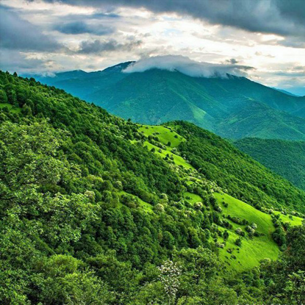
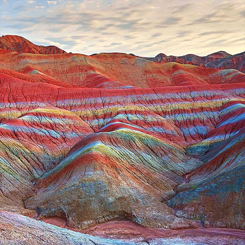
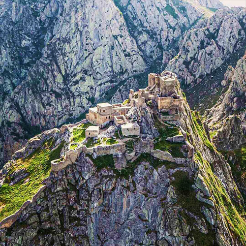
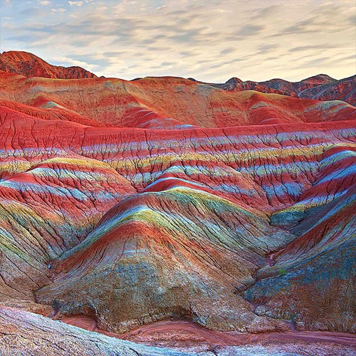
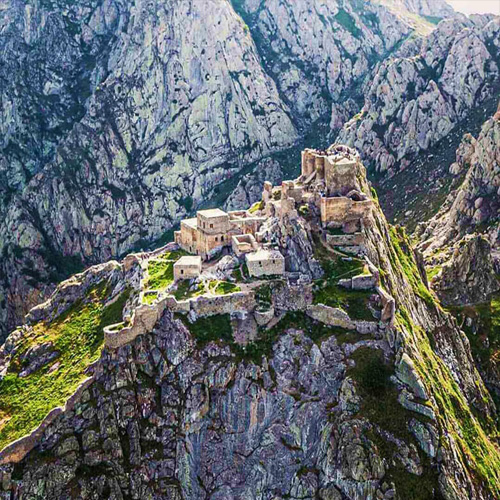
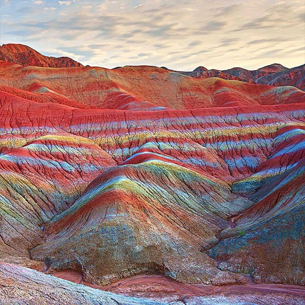
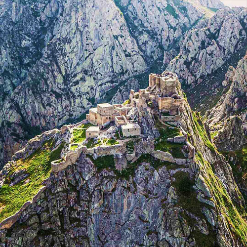

جاذبه های گردشگری در آذربایجان شرقی
آذربایجان شرقی، یکی از جذابترین استانهای نیمه شمال غرب ایران است. تاریخ غنی و مردم مهماننواز، با ویژگیهای فرهنگی خاص این دیار، بر جذابیتهای این استان زیبا افزوده است. اگر قصد سر زدن به استان آذربایجان شرقی دارید، باید لیست بلندبالایی از مراکز دیدنی تهیه کنید..
ادامه دهید

 




